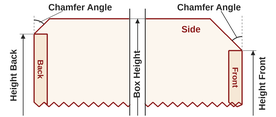
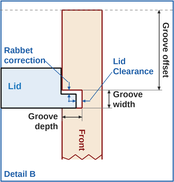
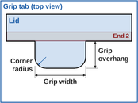

Side Overhang: Front & Back can each get their own height below the box height, tapered by a chamfer. Only available with Lid Type = Open Chamfer (a lidless box with chamfered Front and Back).
Backside

Frontside
Grooved Lid Options
Sliding lid: grooved into Left, Right & Front near the top edge (with Dovetail joints, Front's lid groove has to be cut from its other side - tick "Reverse Front for lid groove on own sheet" to get it on the flip sheet, otherwise Front gets no lid groove and the lid stops at its inside face). The Back is shortened to the underside of the lid, so the lid slides in over it from behind. To pull it out, pick a Grip: a finger hole near the back end, or a grab handle - a tab that overhangs the Back (the rest of the overhang is cut flush left and right).
Lid & GrooveGrip
Lid Panel

Lid Groove
Grip

Grip Shape
Bottom Type
Grooved Bottom Options
Slide-in bottom: grooved into Left, Right & Front (with Dovetail joints, Front's groove has to be cut from its other side - tick "Reverse Front for groove on own sheet" to get it on a sheet of its own, otherwise it is skipped). The Back is shortened to the top of the groove, so the panel can always slide in/out there, even after glue-up. Uncheck "Bottom" under Faces To Machine below to keep the groove but skip cutting the panel itself (e.g. to slide in your own material).